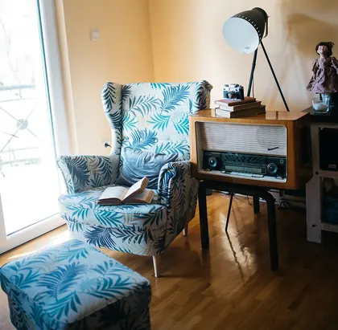
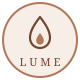

Terapia e cuidado emocional · Online
Todo sentimento tem uma origem.
Entender é o primeiro passo. Sessões terapêuticas e Reiki, online, para você olhar com calma para o que sente e seguir com mais leveza, de onde estiver.
- Sessão Terapêutica
- Todo sentimento tem uma origem
- Reiki Terapêutico
- Escuta sem pressa
- Limpeza energética à distância
- Entender é o primeiro passo
- 100% online
- Devagar também é caminho
- Lume · Essências
Para você
Talvez você esteja aqui porque…
- os mesmos padrões se repetem, mesmo quando você jura que vai ser diferente
- a mente não desliga, nem na hora de dormir
- você se cobra por resultados que ainda não vieram
- existe um cansaço que o descanso não resolve
- um hábito saiu do controle e você não sabe por onde recomeçar
- você quer se conhecer de verdade, além do que mostra
Nada disso é fraqueza. Tem origem. E origem pode ser compreendida.
Descobrir por onde começarAtendimentos
Três caminhos para cuidar de você.
Todos online. Se ainda não sabe qual é o seu, o “Por onde começar?” logo abaixo te ajuda a escolher.
Como funciona
Como funciona, de onde você estiver.
-
01
Você me chama no WhatsApp
Conta um pouco do seu momento e a gente escolhe o melhor caminho e horário.
-
02
Combinamos o seu horário
Online por vídeo ou à distância, como for melhor para você.
-
03
Você se acomoda e a sessão acontece
Na sessão à distância, basta estar em um lugar tranquilo. Muita gente relaxa tanto que adormece.
-
04
Você recebe a devolutiva
Depois do encontro, envio por áudio o que percebi e o que pode contribuir para o seu processo.
Antes da sua sessão
Para aproveitar melhor
Um pequeno ritual para você chegar inteira. Toque em cada item conforme for separando.
0 de 4 prontos
Quero agendar a minhaSobre a Lívia
Escuta com tempo para você.
Sou a Lívia. Atendo há nove anos, sempre online, gente de todo o Brasil e de fora dele. Acredito que quase tudo o que a gente sente e repete começou em algum lugar, e que entender esse começo abre espaço para escolher diferente. Uno a escuta da psicanálise ao Reiki, como cuidado complementar, para acompanhar você no seu tempo.
Formação: Psicanálise Clínica (2017) · Reiki Usui, nível 3 · especialização em Comportamento e Hábitos
“Devagar também é caminho.”
Depoimentos
Quem já viveu, conta.
Mensagens que chegaram depois das sessões. Toque em uma para ler em tamanho maior.
“Cada processo tem o seu tempo. E cada passo conta.”
Ver mais depoimentos no InstagramCada processo é único e os resultados variam.

Vitrine · Lume Essências
Uma essência para cada movimento.
Spray de ambiente e florais artesanais da Lume, a linha de essências da Lívia. Para acompanhar momentos de pausa, foco e recomeço.
Sob medida
Essência personalizada
Conte para a Lívia o momento que você está vivendo e receba um spray pensado para ele.
Produtos artesanais. Não são medicamentos e não substituem nenhum tratamento. Envio para todo o Brasil, pelos Correios · Pagamento por Pix ou cartão. @lume.essencias
Reflexões & Podcast
Reflexões para levar com você.
Um pouco do que a Lívia compartilha toda semana no Instagram e no podcast.
Dúvidas
Perguntas frequentes.
Atendimento online funciona mesmo?
Sim. A escuta acontece por vídeo, com o mesmo cuidado e sigilo de um encontro presencial. Muita gente se sente até mais à vontade, porque está no próprio cantinho, sem trânsito e sem pressa.
Como é a sessão à distância? Preciso estar conectada o tempo todo?
Na sessão à distância, você só precisa estar em um lugar tranquilo, no horário combinado. A Lívia avisa quando começa e quando termina, pelo WhatsApp. Depois, você recebe a devolutiva em áudio para ouvir com calma.
Quanto tempo dura cada sessão?
A sessão terapêutica dura 50 minutos. O Reiki dura 40 minutos, e a limpeza energética, 30. Na conversa pelo WhatsApp, a Lívia te explica direitinho.
Qual a diferença entre a sessão terapêutica e o Reiki?
A sessão terapêutica é um espaço de fala e escuta, para entender a origem do que você sente e repete. O Reiki é um momento de pausa e relaxamento, sem precisar falar muito. Os dois podem caminhar juntos: é a jornada integrada.
O que eu conto fica entre nós?
Sim. Tudo o que você compartilha é tratado com sigilo. Nenhum relato é divulgado sem a sua autorização por escrito.
Reiki substitui terapia ou remédio?
Não. É um cuidado complementar. Os atendimentos não substituem acompanhamento médico, psicológico ou psiquiátrico. Se você faz algum tratamento, continue seguindo as orientações de quem te acompanha.
E se eu estiver num momento muito difícil?
Os atendimentos da Lívia não são atendimento de urgência. Se você está passando por um momento muito difícil, ligue 188 (CVV). É gratuito e funciona 24h.
Como faço para agendar e pagar?
É só chamar a Lívia no WhatsApp. Vocês combinam o melhor caminho e horário, e o pagamento é feito por Pix ou cartão, em até 3 vezes.
O primeiro passo pode ser uma mensagem.
Me conta o seu momento. A gente encontra junto o melhor caminho.
Conversar no WhatsApp